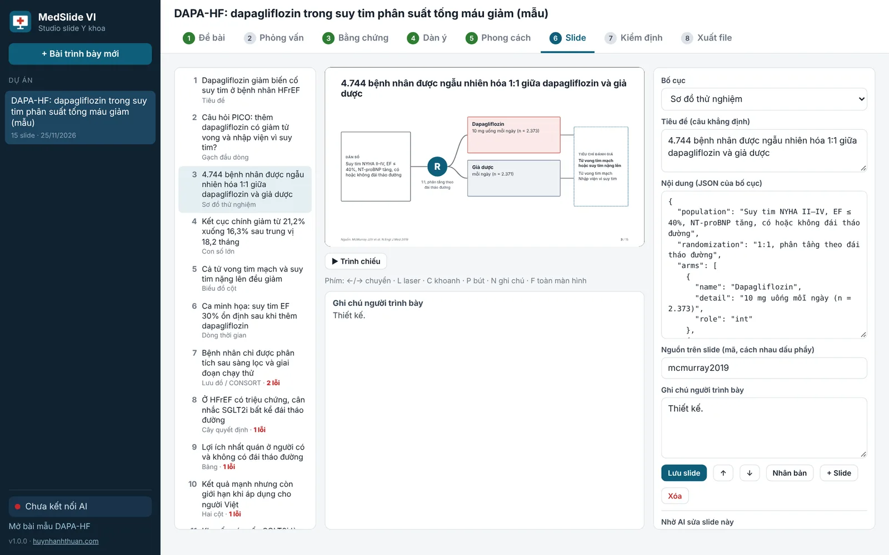
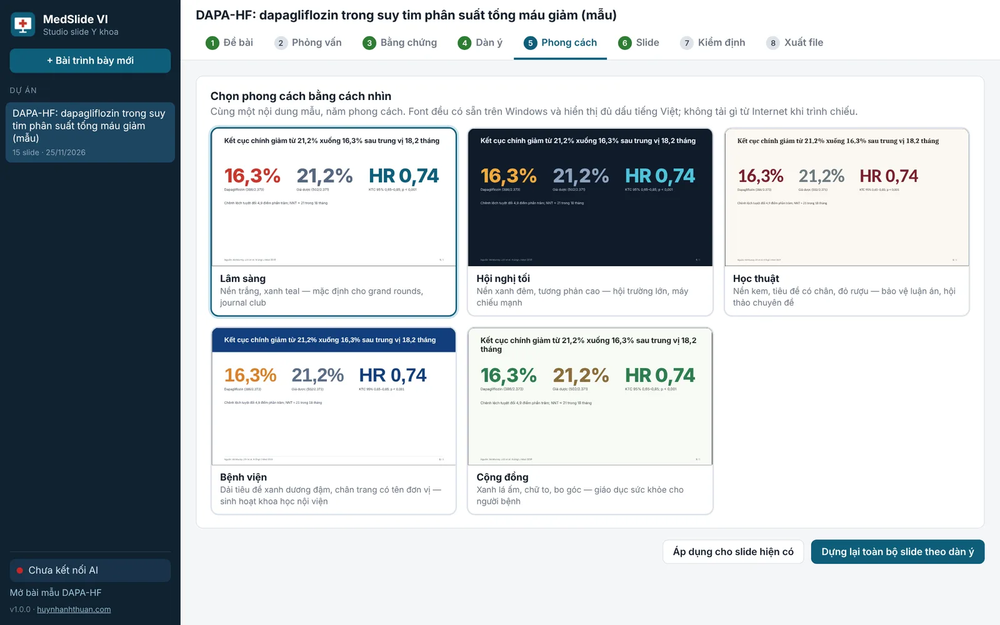
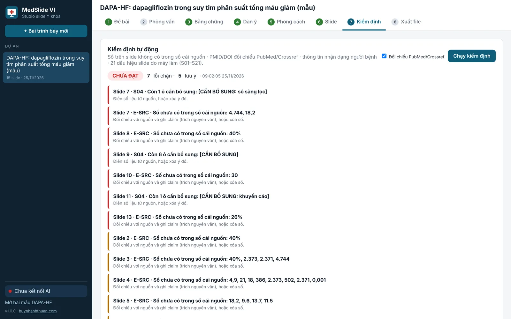
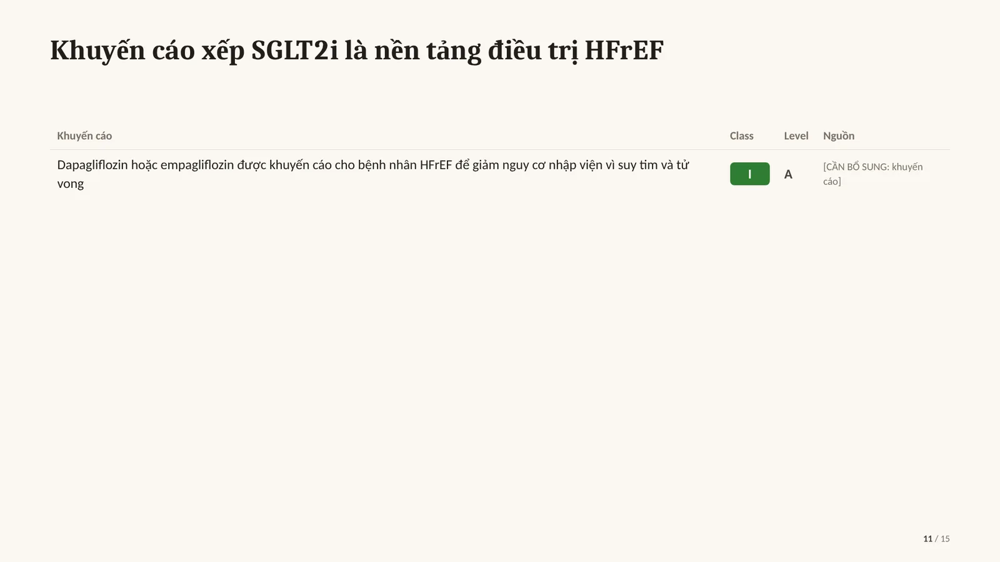
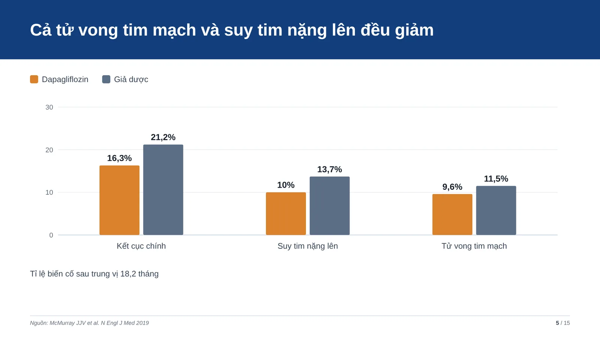
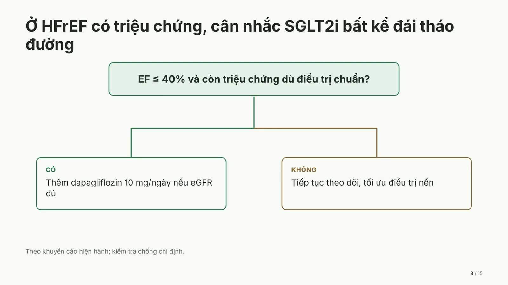

Ứng dụng Windows · miễn phí · mã nguồn mở
Slide Y khoa có bằng chứng, AI làm, bạn duyệt
Nhập chủ đề, AI hỏi bạn một lượt rồi tra PubMed thật và lập dàn ý với tiêu đề là câu kết luận. Từ dàn ý đã duyệt, AI dựng slide và ghi lại nguồn của từng con số. Trước khi bạn lên bục, ứng dụng tự kiểm: số không có nguồn, PMID sai, thông tin người bệnh bị lộ, câu chữ kiểu “máy làm”.

8 bước, có 2 cổng chờ bạn duyệt
Hỏi trước, làm sau, kiểm cuối
AI thông thường làm slide rất nhanh, nhưng tự quyết thay bạn, lấy số từ trí nhớ và hay trộn kết cục này sang kết cục khác. Ở đây, bước nào cũng để lại dữ liệu bạn xem lại được.
- Đề bàiChủ đề, loại bài, khán giả, thời lượng, tải PDF bài báo hoặc phác đồ
- Phỏng vấnTối đa 6 câu, câu nào cũng có lựa chọn khuyến nghị kèm lý do
- Bằng chứngTra PubMed trực tiếp, lấy toàn văn Europe PMC, thêm theo PMID/DOI
- Dàn ýTiêu đề khẳng định, số liệu cần có, thời gian. Cổng 1: bạn duyệt
- Phong cáchChọn bằng mắt giữa 5 phong cách. Cổng 2: bấm dựng
- Slide16 bố cục y khoa, kèm sổ ghi nguồn cho từng con số
- Kiểm địnhSố liệu, PMID, PHI, slop; thêm một lượt AI phản biện độc lập
- Xuất filePowerPoint sửa được, PDF 16:9, HTML có bút laser


Chọn hình theo loại bằng chứng
16 bố cục viết riêng cho ngành Y
Thiết kế thử nghiệm thì vẽ thành sơ đồ, không phải gạch đầu dòng. So sánh hai nhánh thì dùng biểu đồ một trục. Diễn tiến ca bệnh thì đặt trên dòng thời gian, dùng ngày tương đối N0, N3. Khuyến cáo giữ nguyên lời gốc, kèm class và level.
Chạy trên chính slide của bạn
Kiểm trước khi lên bục
Phiếu kiểm định chia lỗi chặn và lưu ý. Bấm vào một lỗi là nhảy tới đúng slide đó.
- Số không có nguồn. Mỗi con số trên slide phải có trong sổ ghi nguồn, kèm câu trích nguyên văn. Phát hiện cả trường hợp số đúng nhưng nằm sai slide, ví dụ HR của RFS bị đặt dưới DMFS.
- Tài liệu thật. PMID đối chiếu PubMed, DOI đối chiếu Crossref: tiêu đề, năm, tác giả đầu. PMID chỉ được lấy từ lượt tra cứu, không lấy từ trí nhớ AI.
- Cường điệu. Tiêu đề nói “giảm”, “cải thiện” trong khi KTC 95% chứa 1 hoặc p ≥ 0,05 thì bị chặn.
- Lộ thông tin người bệnh. Bắt họ tên, ngày điều trị, số điện thoại, mã bệnh án, số BHYT, địa chỉ, theo mẫu tiếng Việt.
- Dấu hiệu “máy làm”. 21 mẫu S01–S21 của Grand Rounds: nhãn nhỏ trên tiêu đề, lời nhắc “bấm tiếp” trên slide, emoji, sáo ngữ, tiêu đề chủ đề kiểu “Kết quả”, slide quá 40 chữ.
- Ô còn trống. Khi thiếu số, AI ghi
[CẦN BỔ SUNG: …]thay vì đoán. Ô này được tô vàng trên slide, và còn ô nào thì phiếu kiểm định chưa cho đạt.

Font có sẵn trên Windows, đủ dấu tiếng Việt
Năm phong cách, cùng một kỷ luật
Không lưới thẻ KPI, không chữ phát sáng, không icon trang trí. Màu đi theo nhánh can thiệp và nhánh chứng, giống nhau trên mọi slide. Thân bài không dưới 24 px ở khổ 1920×1080.





Không cần cài skill, plugin hay Python
Chạy bằng AI bạn đã có
Ứng dụng gọi thẳng công cụ AI dòng lệnh đã đăng nhập trên máy, nên dùng luôn gói tài khoản bạn đang trả tiền. Có thể đặt một nền tảng dự phòng để tự chuyển sang khi nền tảng chính lỗi.
| Nền tảng | Cách kết nối | Ghi chú |
|---|---|---|
| Claude Code CLI | Đăng nhập Claude Pro/Max | Viết tiếng Việt y khoa tốt, nên dùng làm nền tảng chính |
| OpenAI Codex CLI | Đăng nhập ChatGPT Plus/Pro | Nên dùng cho lượt AI phản biện độc lập |
| Gemini CLI / Gemini API | Google AI Pro hoặc khóa AIza… | Khóa API có gói miễn phí |
| Antigravity, Muse, OpenCode, Copilot, Qwen | CLI tương ứng | Ứng dụng tự tìm CLI đã cài trên máy |
| Ollama | Chạy trên máy, không cần mạng | Dành cho ca bệnh có dữ liệu nhạy cảm |
| OpenRouter | Khóa sk-or-… | Trả tiền theo lượt dùng |
Khoảng năm phút
Cài trên Windows
Tải và chạy file cài
Bấm Tải bản cài ở đầu trang. Windows có thể hiện cảnh báo SmartScreen vì ứng dụng chưa có chứng thư ký số: bấm “More info”, rồi “Run anyway”. Bản portable chạy ngay mà không cần cài.
More info → Run anywayKết nối AI
Bấm ô Kết nối AI ở góc trái dưới. Chọn công cụ đã đăng nhập, hoặc bấm Cài, Đăng nhập ngay trong ứng dụng, hoặc dán khóa API. Bấm “Thử” để chắc AI trả lời được.
Kết nối AI → chọn → Thử → LưuMở bài mẫu hoặc làm bài mới
Bấm “Mở bài mẫu DAPA-HF” để xem một bài hoàn chỉnh, hoặc “+ Bài trình bày mới” và làm theo 8 bước. Dự án được lưu trong thư mục Tài liệu của bạn.
Documents\MedSlide VI Studio\
Đứng trên vai ba dự án mã nguồn mở (MIT)
Gộp ba bộ skill thành một ứng dụng
Ba dự án dưới đây vốn là bộ kỹ năng phải cài vào Claude Code hay Codex. MedSlide VI Studio đóng gói phương pháp của cả ba vào một ứng dụng: người dùng không cần biết dòng lệnh.
Hỏi đáp
Số liệu trên slide có tin được không?
Ứng dụng giảm sai sót chứ không thay được người đọc lại. AI chỉ được lấy số từ tài liệu bạn đưa vào hoặc từ abstract, toàn văn tra được. Mỗi con số đi kèm câu trích nguyên văn, và phiếu kiểm định báo những số không có nguồn. Trước khi trình bày, bạn vẫn phải mở bài gốc đối chiếu các con số chính.
Dữ liệu ca bệnh có bị gửi đi đâu không?
Dự án lưu trên máy bạn. Phần chữ cần xử lý được gửi tới nền tảng AI bạn chọn, theo chính sách của nhà cung cấp đó. Với ca bệnh, hãy ẩn danh trước khi đưa vào. Nếu không muốn chữ rời khỏi máy, chọn Ollama. Bộ quét PHI chỉ đọc chữ, nên bạn vẫn phải tự xem lại các hình ảnh.
File PowerPoint có sửa được không?
Có. Chữ, bảng, biểu đồ cột và sơ đồ đều là đối tượng PowerPoint thật, có cả ghi chú người trình bày. Bạn có thể mở bằng PowerPoint hoặc Google Slides rồi chỉnh tiếp.
Làm slide tiếng Anh cho hội nghị quốc tế được không?
Được. Chọn “English” ở bước Đề bài: chữ trên slide sẽ bằng tiếng Anh y khoa, số thập phân dùng dấu chấm.
Có phải trả tiền không?
Ứng dụng miễn phí, mã nguồn mở theo giấy phép MIT. Việc tạo slide dùng hạn mức của tài khoản AI bạn đang có. Tra PubMed, Europe PMC và Crossref miễn phí.